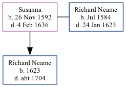

Susanna, the 10 times great-grandmother of Nigel Horne, was born in Goodnestone, Kent, England on Nov 26, 1592 and married Richard Neame (with whom she had 1 child, Richard) in Woodnesborough, Kent, England on Nov 11, 16161.
Kent, England, Tyler Index to Parish Registers, 1538-1874 Online publication - Provo, UT, USA: Ancestry.com Operations, Inc., 2010. This collection was indexed by Ancestry World Archives Project contributors.Original data - Frank Watt Tyler. The Tyler Collection. Canterbury, Kent, England: The Institute of Herald
Family Tree

Map
Generated by Ged2Site. Last updated on Jul 20, 2025